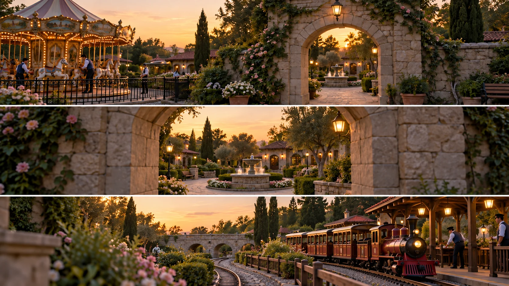

F02 · 고급 · FPV
공원 전체를 느리게 경험시키기
지속 시간을 늘리는 대신 공간을 읽을 시간과 연결 가능한 시작·종료 화면을 설계한다.
그림에서 확인할 세 가지여러 촬영 구간을 한 여행처럼 연결
1아치 앞의 도입
회전목마와 아치를 함께 보며 무엇을 방문하고 어디로 이동할지 읽는다. 첫 공간의 중심과 다음 공간의 입구가 함께 보이는 구성이 중요하다.
2정원의 연결부
정원의 반복되는 석조 모서리를 앞뒤 화면과 비교한다. 모서리에 시야가 가려지는 순간에도 진행 방향과 빛의 흐름이 이어지는지 살핀다.
3철도 구역의 공개
마지막 화면에서 새 시설을 충분히 알아볼 수 있는지 본다. 다음 공간에 도착한 뒤에도 계속 이동하기만 하면 시설의 기능을 읽을 시간이 줄어든다.
촬영 설계
촬영을 이렇게 설계한다
체류 시간을 정한다
학습 설계에서는 방문 순서만 나열하지 말고 각 시설을 알아보는 시간을 먼저 배분한다. 다음 공간으로 빨리 넘어가도 이름 없는 장식만 남는다면 해당 구간의 속도와 시선을 조정한다.
연결부를 짝짓는다
출구와 다음 구간의 입구를 한 쌍으로 그린다. 가상 아치를 이용한다면 가림이 시작되는 위치, 화면의 진행 방향, 밝기가 대응하도록 계획하고 실제 편집 가능성은 테스트 촬영으로 확인한다.
시설과 비행을 동기화한다
제작진은 놀이시설의 작동 시점과 촬영 동선을 함께 계획했다. 적용할 때는 해당 시설을 바라보는 시간에 핵심 동작이 들어오는지 확인하고 연결부 때문에 그 장면이 잘리지 않도록 조정한다.
제작진은 비어 있는 공원을 느리게 보여주기 위해 시설 작동과 구간별 연결을 미리 계획했다.
원본 영상Efteling Full Park One-take
1. 편집과 체험의 차이
공간이 바뀔 때 진행 방향과 이동 리듬이 이어지는지 본다. 제작 노트의 분할 촬영과 관객이 느끼는 연속 경험을 구별한다.
2. 공간을 읽는 시간
시설이 등장한 뒤 다음 가림까지 얼마나 머무는지 본다. 대상의 기능을 알아보기 전에 사라지면 이동 속도가 정보를 압도한다.
3. 연결점의 조건
연결 전후의 구조물·진행 방향·밝기를 비교한다. 비슷한 구조물이 등장한다는 이유만으로 자연스러운 연결이 보장되지는 않는다.
재생이 제한되면 원본 영상 새 창을 이용하세요.
제작진 설명 · 한국어 요약 번역
긴 테이크를 위한 계획 변경
초기 계획
Dutch Drone Gods는 처음에 짧은 촬영분을 컷으로 잇는 방식을 계획했다고 설명한다.
촬영 제약
촬영 시간이 이틀 저녁에 걸쳐 약 4시간에서 5시간뿐이고 신호 거리도 한계라 한 번에 찍기는 어려웠다.
해결과 준비
그래서 이전 프로젝트에서 개발한 릴레이 드론 RF 기술로 한 테이크의 길이를 늘렸다.
경로 지도 작성, 놀이기구 시간 확인, 연결 지점과 이륙 지점 선정이 준비 항목이었다.
제작진 설명 · 한국어 요약 번역
긴 테이크를 위한 현장 운영
경로 난이도
일부 테이크는 약 5분 길이였고 울창한 숲길을 지나는 복잡한 경로였다고 한다.
현장 조건
촬영하려면 공원에서 방문객을 비우고 놀이기구 운영자와 가동 시점을 맞춰야 했다.
촬영 직전의 일정 변경과 테이크 사이의 빛 변화도 관리해야 할 조건이었다.
안내와 경험
경로가 불확실할 때는 스포터가 조종사에게 방향을 하나씩 안내했다.
페이지는 공식 리허설을 설명하지 않고 조종사의 장거리 원테이크 경험을 언급한다.
Kling 프롬프트단문 인과 체인 · 16:9
내가 직접 만들어 본다
시설마다 속도를 줄여 읽을 시간을 주고, 가림 앞뒤의 방향과 밝기를 이어 한 여정으로 느끼게 하는 인과를 지시한다.
같은 인과를 FPV 시점의 속도, 근접 통과, 회전으로 표현한다.
- S01정원 뒤에 회전목마와 아치와 기차역이 차례로 있다.
- S02영상은 하나의 연속 쇼트다.
- S03화면에 드론 기체는 나오지 않는다.
- S04처음 10초 동안 카메라는 회전목마 앞에서 속도를 줄인다.
- S05속도를 줄이기 때문에 회전목마가 무엇인지 보인다.
- S06카메라는 회전목마의 중심과 아치를 함께 화면에 둔다.
- S07다음 10초 동안 카메라가 아치 쪽으로 나아간다.
- S08아치의 돌 모서리가 화면을 잠깐 가린다.
- S09모서리 뒤에서도 카메라는 같은 방향으로 나아간다.
- S10가림이 끝나자 같은 밝기로 정원이 이어진다.
- S11마지막 10초 동안 카메라는 기차역 앞에서 다시 속도를 줄인다.
- S12기차가 출발하기 때문에 시선이 기차에 머문다.
- S13느려진 카메라 덕분에 기차역의 기능이 끝까지 보인다.
[네거티브]
- 세 시설이 차례 없이 한 곳에 뭉쳐 보이는 것 금지
- 중간에 컷이나 암전이 들어가 쇼트가 끊기는 것 금지
- 화면에 드론 기체가 나타나는 것 금지
- 카메라가 같은 속도로 회전목마를 스쳐 지나가는 것 금지
- 회전목마가 흐릿하게 지나가 무엇인지 알 수 없는 것 금지
- 회전목마만 크게 남고 아치가 화면에서 빠지는 것 금지
- 카메라가 아치를 지나쳐 옆길이나 위로 벗어나는 것 금지
- 돌 모서리가 오래 화면을 막아 아무것도 안 보이는 것 금지
- 모서리 뒤에서 카메라가 방향을 바꾸거나 멈추는 것 금지
- 가림이 끝난 뒤 정원의 밝기가 갑자기 달라지는 것 금지
- 카메라가 기차역을 속도 변화 없이 지나쳐 버리는 것 금지
- 기차가 서 있기만 하거나 화면 밖에서 출발하는 것 금지
- 도착한 뒤에도 카메라가 계속 이동해 기차역이 흐려지는 것 금지
- S01영상은 FPV 시점의 하나의 연속 쇼트다.
- S02화면에 드론 기체는 나오지 않는다.
- S03정원 뒤에 회전목마와 아치와 기차역이 차례로 있다.
- S04처음 10초 동안 카메라는 정원 위를 질주해 회전목마로 급강하한다.
- S05카메라는 회전목마의 말들 옆을 스치며 지나간다.
- S06질주하면 이름이 읽히지 않기 때문에 카메라는 급감속한다.
- S07카메라는 회전목마의 중심과 아치를 함께 화면에 둔다.
- S08다음 10초 동안 카메라는 아치를 향해 점점 가속한다.
- S09카메라는 정원의 석조 모서리를 바짝 스치며 질주한다.
- S10모서리가 화면을 가려도 진행 방향은 같다.
- S11카메라가 옆으로 기울며 정원이 비스듬해진다.
- S12기울기가 커지자 땅이 머리 위로 뒤집힌다.
- S13한 바퀴를 돌아 정원이 다시 아래로 돌아온다.
- S14가림이 끝나자 같은 밝기로 정원이 이어진다.
- S15마지막 10초 동안 카메라는 아치를 통과해 기차역으로 파고든다.
- S16카메라는 기차역 앞에서 급감속한다.
- S17기차가 출발하기 때문에 카메라는 기차 바로 옆에서 멈춘다.
- S18느려진 카메라 덕분에 기차역의 기능이 끝까지 보인다.
[네거티브]
- 영상이 여러 컷으로 끊겨 이어지는 것 금지
- 화면에 드론 기체가 나타나는 것 금지
- 정원과 세 시설이 한 화면에 없는 것 금지
- 카메라가 멀리서 내려다보기만 하는 것 금지
- 회전목마와 멀리 떨어져 지나치는 것 금지
- 속도가 줄지 않아 시설이 읽히지 않는 것 금지
- 회전목마와 아치가 따로 놀게 되는 것 금지
- 속도가 일정해 가속이 느껴지지 않는 것 금지
- 모서리와 멀리 떨어져 비행하는 것 금지
- 가림 뒤에 진행 방향이 바뀌는 것 금지
- 기울기 없이 화면이 수평으로만 흐르는 것 금지
- 뒤집힘 없이 장면이 밀려 지나가기만 하는 것 금지
- 한 바퀴가 끝나도 방향이 돌아오지 않는 것 금지
- 가림 뒤에 밝기가 갑자기 달라지는 것 금지
- 아치를 통과하지 않고 장면이 끊기는 것 금지
- 속도가 느려져 일반 항공 샷처럼 보이는 것 금지
- 기차가 출발해도 카메라가 시선을 놓치는 것 금지
- 기차역의 기능이 읽히기 전에 지나가는 것 금지
결과에서 볼 것
- 회전목마 앞에서 충분히 읽을 시간이 있었는가
- 가림 앞뒤로 방향과 밝기가 이어졌는가
- 기차역의 기능이 끝까지 읽혔는가
- 첫 동작부터 카메라가 빠르게 움직였는가
- 사람이나 물체 곁을 가까이 스치며 지나갔는가
- 회전과 급감속이 화면에 보였는가